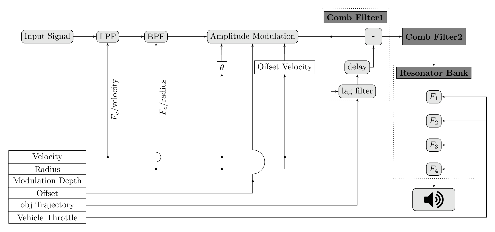

I my MSc project Soni-Cross, I first developed an AVAS sound model based on a physical model of a 'rolling' sphere (software), as it is suggested that 'rolling sounds' can better communicate the perception of Electric Vehicles. The model was strongly influenced by: Conan, Simon, et al. "Rolling sound synthesis: work in progress." 9th International Symposium on Computer Music Modeling and Retrieval (CMMR). 2012.
Rolling model block diagram
I created a state-of-the-art audio-visual simulation framework for AVAS testing. It simulates drive-by scenarios involving Electric Vehicles employing AVAS sound models. The aim of this was to create a realistic environment for collecting user experience data to explore the way participants perceive AVAS sounds. This can support the future optimisation of AVAS models.

Audio Visual Simulation Framework
I also performed a number of real-life measurements for integrating this data for further AVAS optimisation. Such as Multichannel IR extraction using Eigenmike (32 ch), relative loudness measurements, spatial recording analysis etc.

Eigenmike 32, Multichannel IR extraction

Picture by Hyunkook Lee: Relative Loudness Measurement at Firth Street
Most importantly, this work was dedicated to assessing how different frequencies of the AVAS model influence pedestrian's perception in terms of annoyance. It is important for AVAS sounds to be 'alarming in a way' but on the other hand, it is crucial for manufacturers to have a unique sonic signature. My project tries to bridge this gap and provide straightforward solutions.
The foundation of my model is based on the UN R138 regulation standard for AVAS indicating a list of various frequencies (1/3 octave). In my experiments I tested all possible frequency combinations based on this regulation.
I performed objective 'Sound Quality' testing for 5005 sound configurations. I used an objective model for calculating annoyance scores based on metrics impacting annoyance, such as Sharpness, Roughness, Fluctuation Strength, Tonality, and Loudness for understanding better annoyance in AVAS sounds.
Afterwards I also used Machine Learning for categorising the sounds into groups according to their frequency features for further analysis.
I performed 3 subjective testing experiments with more than 50 participants using the framework and collecting user experience data. The results look expected interesting!
Note 1: The full thesis will be published (expected May 2025) under the title: Exploring the Influence of Frequency Components in Acoustic Vehicle Alerting Systems for Electric Vehicles on Annoyance Perception. I also plan to publish the software as open source in a git repository around the same time.
Note 2: I have planned to re-implement the model for use with some kind of common microcontroller-based ECU, ASD ECU, or a DSP and release the software as open source but this is planned for 2025 (at least).